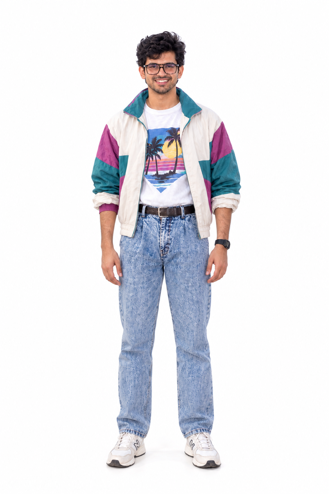

02
Inputs
Reference Materials
Wan Animate separates what the character looks like from how the character moves. The reference image supplies identity and appearance. The reference video supplies the motion sequence.

▶
Reference Video — Motion Source
Motion Source
Sourced as a vertical YouTube Short and used purely as the motion source: it supplies pose and timing, not appearance.

Character Reference — Identity
Identity Reference
Full-body character image prepared for identity conditioning and replacement. Identity stays constant; motion comes from the dance video.
Workflow Principle
Identity stays constant in the reference image; motion comes from the dance video. The workflow maps the second onto the first.